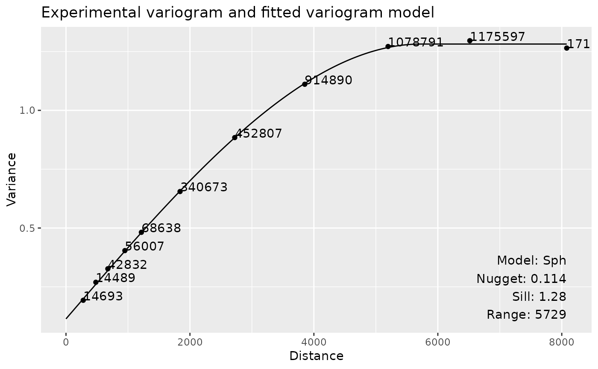
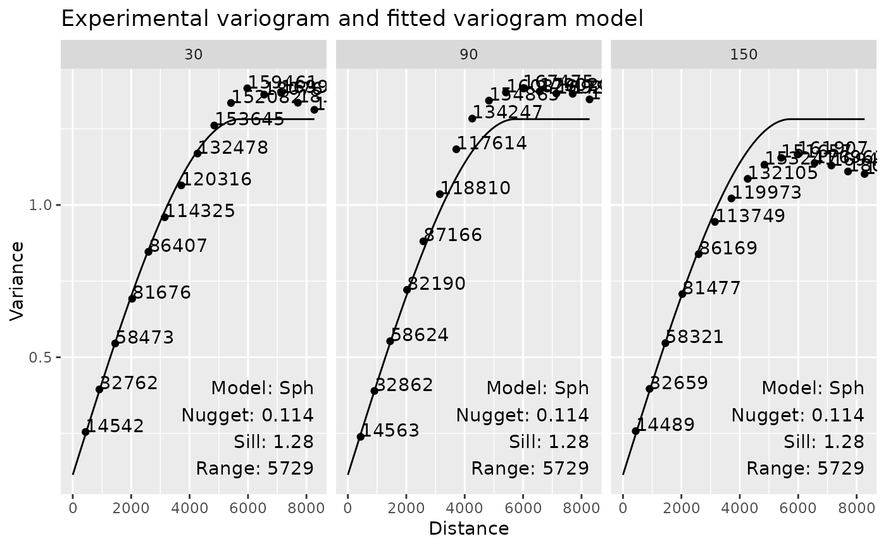
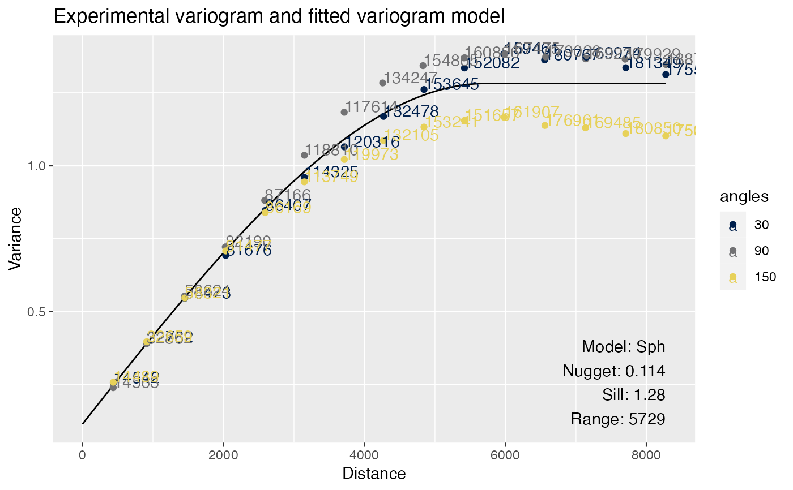

This function plots the variogram of a feature and its fitted variogram
models, showing the nugget, range, and sill of the model. Unlike the plotting
functions in package automap that uses lattice, this function
uses ggplot2 to make prettier and more customizable plots.
Usage
plotVariogram(
sfe,
features,
sample_id = "all",
color_by = NULL,
group = c("none", "sample_id", "features", "angles"),
use_lty = TRUE,
show_np = TRUE,
ncol = NULL,
colGeometryName = NULL,
annotGeometryName = NULL,
reducedDimName = NULL,
divergent = FALSE,
diverge_center = NULL,
swap_rownames = NULL,
name = "variogram"
)Arguments
- sfe
A
SpatialFeatureExperimentobject.- features
Features to plot, must be in rownames of the gene count matrix, colnames of colData or a colGeometry, colnames of cell embeddings in
reducedDim, or numeric indices of dimension reduction components.- sample_id
Sample(s) in the SFE object whose cells/spots to use. Can be "all" to compute metric for all samples; the metric is computed separately for each sample.
- color_by
Name of a column in
rowData(sfe)or in thefeatureDataofcolData(seecolFeatureData),colGeometry, orannotGeometryby which to color the correlogram of each feature. Alternatively, a vector of the same length asfeatures, or a data frame fromclusterCorrelograms.- group
Which of samples, features, and angles to show in the same facet for comparison when there are multiple. Default to "none", meaning each facet will contain one variogram. When grouping multiple variograms in the same facet, the text with model, nugget, sill, and range of the variograms will not be shown.
- use_lty
Logical, whether to use linetype or point shape to distinguish between the different features or samples in the same facet. If
FALSE, then the different features or samples are not distinguished and the patterns are shown only.- show_np
Logical, whether to show number of pairs of cells at each distance bin.
- ncol
Number of columns if facetting.
- colGeometryName
Name of a
colGeometrysfdata frame whose numeric columns of interest are to be used to compute the metric. UsecolGeometryNamesto look up names of thesfdata frames associated with cells/spots.- annotGeometryName
Name of a
annotGeometryof the SFE object, to annotate the gene expression plot.- reducedDimName
Name of a dimension reduction, can be seen in
reducedDimNames.colGeometryNameandannotGeometryNamehave precedence overreducedDimName.- divergent
Logical, whether a divergent palette should be used.
- diverge_center
If
divergent = TRUE, the center from which the palette should diverge. IfNULL, then not centering.- swap_rownames
Column name of
rowData(object)to be used to identify features instead ofrownames(object)when labeling plot elements. If not found inrowData, then rownames of the gene count matrix will be used.- name
Name under which the correlogram results are stored, which is by default "sp.correlogram".
Value
A ggplot object. The empirical variogram at each distance bin
is plotted as points, and the fitted variogram model is plotted as a line
for each feature. The number next to each point is the number of pairs of
cells in that distance bin.
Examples
library(SFEData)
sfe <- McKellarMuscleData()
#> see ?SFEData and browseVignettes('SFEData') for documentation
#> loading from cache
sfe <- colDataUnivariate(sfe, "variogram", features = "nCounts", model = "Sph")
plotVariogram(sfe, "nCounts")

# Anisotropy, will get a message
sfe <- colDataUnivariate(sfe, "variogram", features = "nCounts",
model = "Sph", alpha = c(30, 90, 150), name = "variogram_anis")
#> gstat does not fit anisotropic variograms. Variogram model is fitted to the whole dataset.
# Facet by angles by default
plotVariogram(sfe, "nCounts", name = "variogram_anis")

# Plot angles with different colors
plotVariogram(sfe, "nCounts", group = "angles", name = "variogram_anis")
